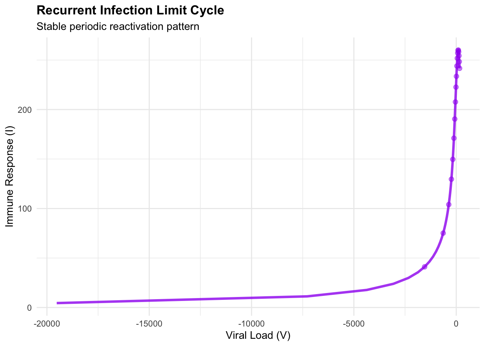
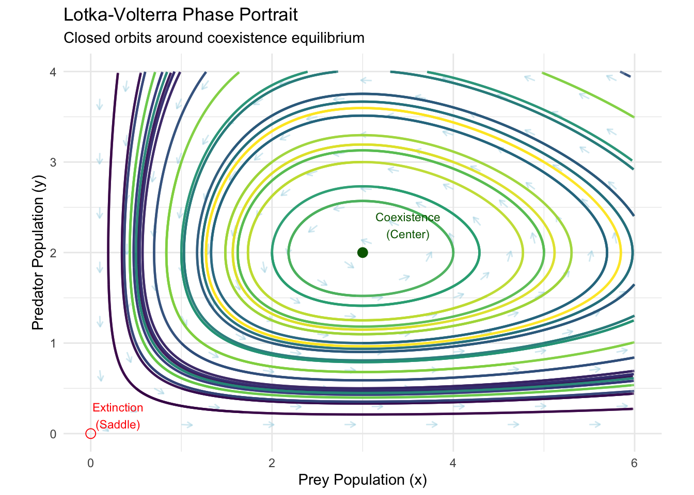
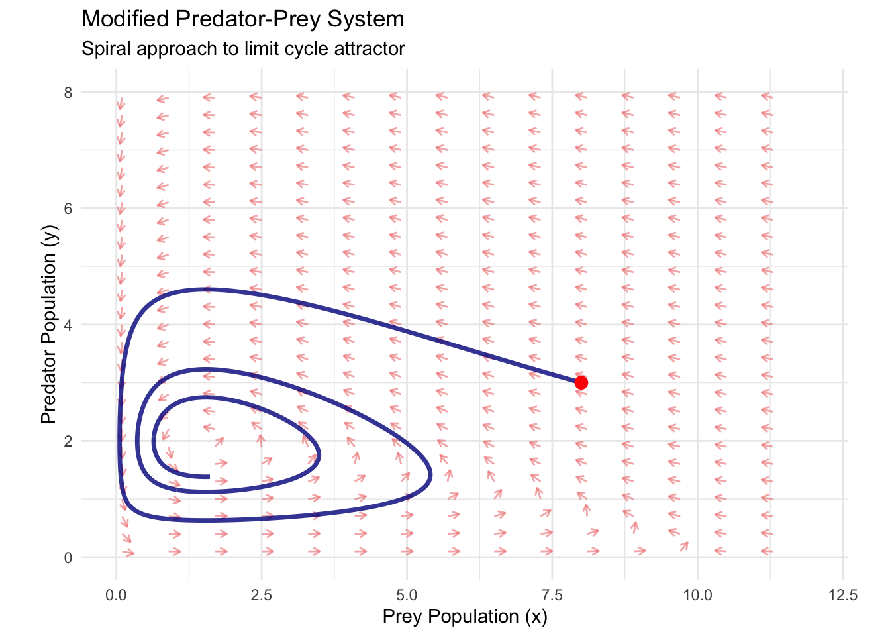
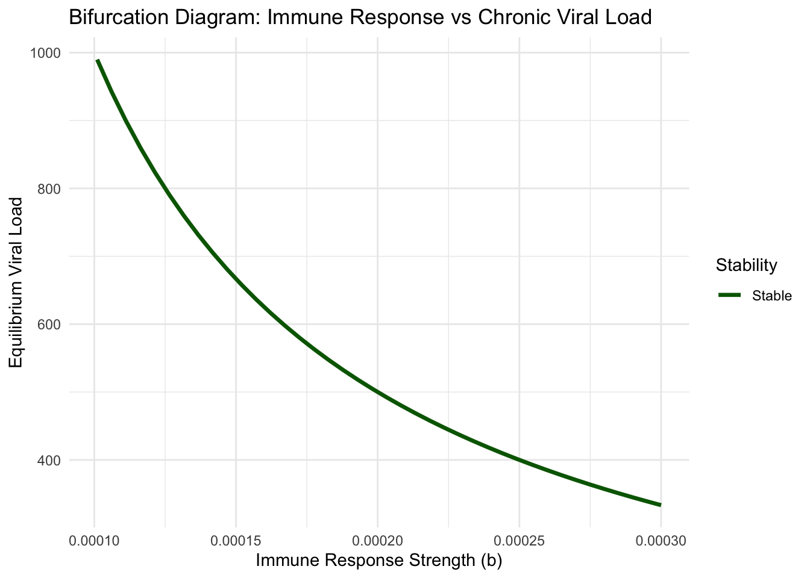
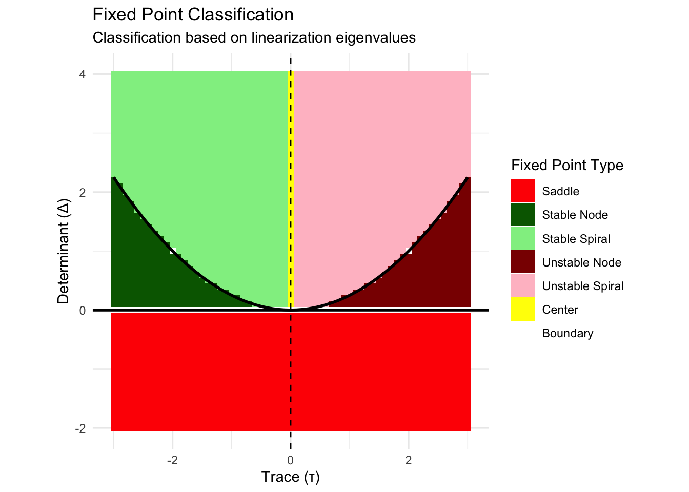
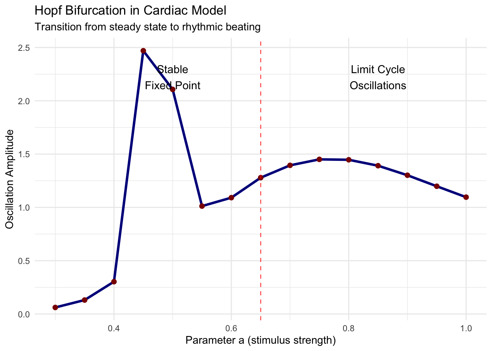
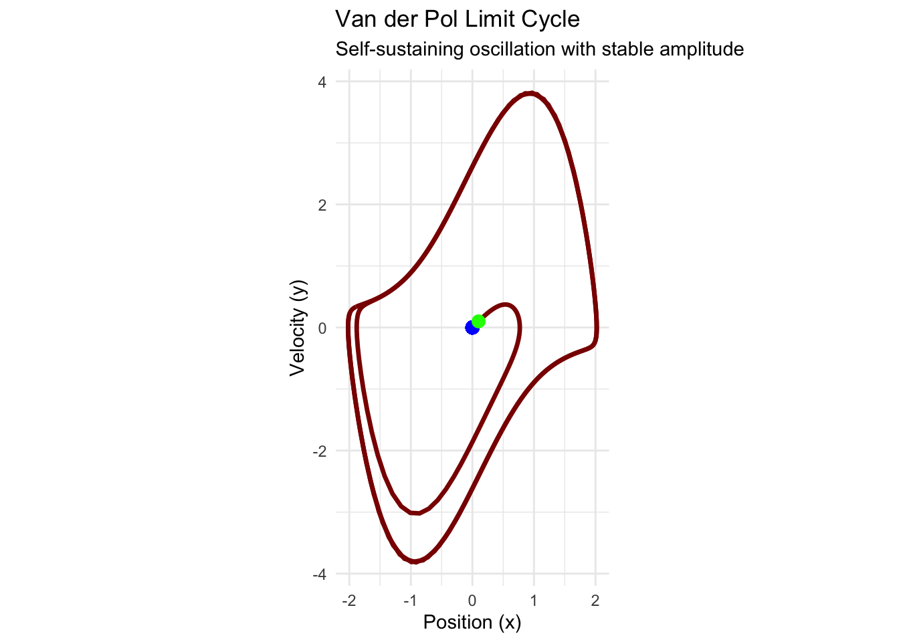
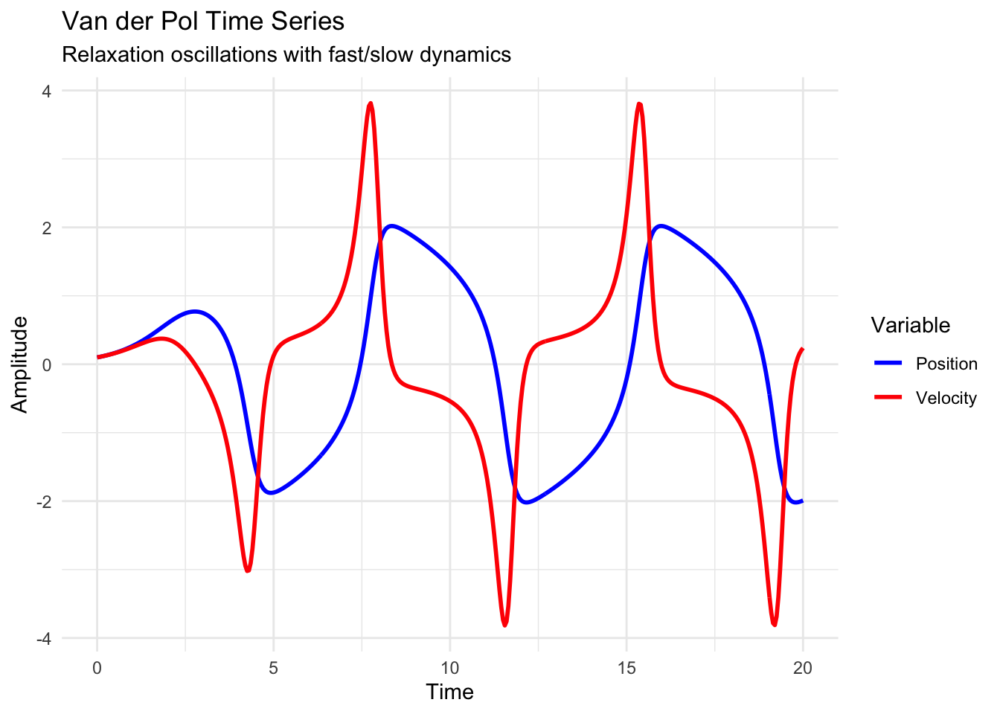

Chapter 6 Introducion to Systems
The morning sun illuminates a meadow where rabbits graze peacefully among wildflowers. Hidden in the forest edge, foxes wait with predatory patience. This ancient dance—predator stalking prey, prey population rising and falling, predator numbers following in complex synchrony—represents one of nature’s most fundamental patterns. Yet beneath this pastoral scene lies mathematics of stunning beauty and complexity.
Where our previous exploration revealed the rich geometric structure of one-dimensional flows, we now enter a realm of vastly expanded possibility. With two coupled variables, systems can exhibit behaviors impossible in single dimensions: closed orbital trajectories where populations cycle endlessly, spiral attractors where disturbances decay in oscillatory fashion, and saddle points where trajectories approach along some directions while fleeing along others.
The transition from one to two dimensions represents more than mere complexity increase—it constitutes a qualitative leap into the heart of modern dynamical systems theory. Here, we encounter the fundamental objects that govern everything from planetary motion to neural oscillations: vector fields that assign velocity vectors to every point in space, phase portraits that reveal the global organization of system behavior, and limit cycles that create sustained oscillations without external driving.
6.1 The Architecture of Coupled Systems
A two-dimensional dynamical system consists of two coupled differential equations that simultaneously govern the evolution of two state variables:
\[\frac{dx}{dt} = f(x,y)\] \[\frac{dy}{dt} = g(x,y)\]
These equations define a vector field \(\mathbf{F}(x,y) = (f(x,y), g(x,y))\) that assigns to every point \((x,y)\) in the phase plane a velocity vector indicating the instantaneous direction and magnitude of system motion.
Unlike one-dimensional systems where trajectories could only move forward or backward along a line, two-dimensional systems permit trajectories to curve, spiral, form closed loops, and exhibit intricate geometric patterns. The phase space—now a plane rather than a line—becomes a canvas for displaying the complete behavioral repertoire of the system.
Consider our foundational example, the Lotka-Volterra predator-prey system:
\[\frac{dx}{dt} = ax - bxy\] \[\frac{dy}{dt} = -cy + dxy\]
Here, \(x\) represents prey population (rabbits), \(y\) represents predator population (foxes), and the parameters \(a\), \(b\), \(c\), \(d > 0\) encode biological interactions. The term \(ax\) models exponential prey growth in the absence of predators. The term \(-bxy\) captures predation events, reducing prey while the term \(dxy\) converts consumed prey into new predators. The term \(-cy\) represents predator death in the absence of prey.
This system embodies the essential feature distinguishing multi-dimensional dynamics from one-dimensional flows: coupling. Neither variable evolves independently. Instead, each variable’s rate of change depends explicitly on the current state of both variables, creating feedback loops that generate complex temporal patterns.
# Load required libraries
library(ggplot2)
library(dplyr)
library(gridExtra)
library(viridis)
# Define Lotka-Volterra system
lotka_volterra <- function(t, state, parameters) {
with(as.list(c(state, parameters)), {
dx <- a*x - b*x*y
dy <- -c*y + d*x*y
list(c(dx, dy))
})
}
# Set parameters
params <- list(a = 1, b = 0.5, c = 0.75, d = 0.25)
# Create vector field visualization
x_range <- seq(0.1, 6, by = 0.3)
y_range <- seq(0.1, 4, by = 0.2)
vector_field_data <- expand.grid(x = x_range, y = y_range)
# Calculate vector field
vector_field_data$dx <- with(vector_field_data, params$a*x - params$b*x*y)
vector_field_data$dy <- with(vector_field_data, -params$c*y + params$d*x*y)
# Normalize vectors for better visualization
vector_field_data$magnitude <- sqrt(vector_field_data$dx^2 + vector_field_data$dy^2)
vector_field_data$dx_norm <- vector_field_data$dx / vector_field_data$magnitude * 0.15
vector_field_data$dy_norm <- vector_field_data$dy / vector_field_data$magnitude * 0.15
# Create vector field plot
vector_field_plot <- ggplot(vector_field_data, aes(x = x, y = y)) +
geom_segment(aes(xend = x + dx_norm, yend = y + dy_norm),
arrow = arrow(length = unit(0.02, "npc")),
color = "steelblue", alpha = 0.7) +
labs(
title = "Lotka-Volterra Vector Field",
x = "Prey Population (x)",
y = "Predator Population (y)",
subtitle = "Arrows show instantaneous direction of system evolution"
) +
theme_minimal() +
coord_equal()
print(vector_field_plot)
The vector field visualization reveals the geometric structure underlying predator-prey dynamics. At each point in the phase plane, the arrow indicates where a system starting at that point will initially move. The patterns formed by these arrows encode the system’s global behavioral organization.
6.1.1 Fixed Points and Local Stability Analysis
In two-dimensional systems, fixed points (also called equilibrium points) occur where both derivatives simultaneously vanish:
\[f(x^_, y^_) = 0\] \[g(x^_, y^_) = 0\]
For the Lotka-Volterra system, we solve:
\[ax^* - bx^_y^_ = x^_(a - by^_) = 0\] \[-cy^* + dx^_y^_ = y^_(-c + dx^_) = 0\]
The first equation gives either \(x^* = 0\) or \(y^* = a/b\). The second equation gives either \(y^* = 0\) or \(x^* = c/d\). This yields two fixed points: \((0,0)\) representing mutual extinction, and \((c/d, a/b)\) representing coexistence.
To analyze stability, we linearize the system near each fixed point. The Jacobian matrix captures the local linear approximation:
\[\mathbf{J}(x,y) = \begin{pmatrix} \frac{\partial f}{\partial x} & \frac{\partial f}{\partial y} \ \frac{\partial g}{\partial x} & \frac{\partial g}{\partial y} \end{pmatrix} = \begin{pmatrix} a - by & -bx \ dy & -c + dx \end{pmatrix}\]
At the extinction fixed point \((0,0)\):
\[\mathbf{J}(0,0) = \begin{pmatrix} a & 0 \ 0 & -c \end{pmatrix}\]
The eigenvalues are \(\lambda_1 = a > 0\) and \(\lambda_2 = -c < 0\). Since we have one positive and one negative eigenvalue, this fixed point is a saddle—trajectories approach along the stable direction (predator axis) but diverge along the unstable direction (prey axis).
At the coexistence fixed point \((c/d, a/b)\):
\[\mathbf{J}\left(\frac{c}{d}, \frac{a}{b}\right) = \begin{pmatrix} 0 & -\frac{bc}{d} \ \frac{ad}{b} & 0 \end{pmatrix}\]
The characteristic equation is:
\[\det(\mathbf{J} - \lambda\mathbf{I}) = \lambda^2 + \frac{bc}{d} \cdot \frac{ad}{b} = \lambda^2 + ac = 0\]
This gives purely imaginary eigenvalues \(\lambda = \pm i\sqrt{ac}\). Such eigenvalues indicate a center—trajectories near the fixed point follow closed orbits.
# Analyze fixed points and stability
# Fixed points
fp1 <- c(0, 0) # Extinction
fp2 <- c(params$c/params$d, params$a/params$b) # Coexistence
# Calculate Jacobian at each fixed point
jacobian_at_point <- function(x, y, params) {
matrix(c(params$a - params$b*y, -params$b*x,
params$d*y, -params$c + params$d*x),
nrow = 2, byrow = TRUE)
}
J1 <- jacobian_at_point(fp1[1], fp1[2], params)
J2 <- jacobian_at_point(fp2[1], fp2[2], params)
# Calculate eigenvalues
eigen1 <- eigen(J1)
eigen2 <- eigen(J2)
cat("Fixed Point 1 (Extinction):", fp1, "\n")## Fixed Point 1 (Extinction): 0 0## Eigenvalues: 1 -0.75## Type: Saddle (one positive, one negative eigenvalue)## Fixed Point 2 (Coexistence): 3 2## Eigenvalues: 0+0.8660254i 0-0.8660254i## Type: Center (purely imaginary eigenvalues)The linear stability analysis reveals fundamental differences between fixed point types. Saddle points are always unstable—most nearby trajectories eventually diverge. Centers represent neutrally stable equilibria—nearby trajectories neither converge to nor diverge from the fixed point, instead forming closed orbits.
6.1.2 The Phase Portrait: Visualizing Global Behavior
While linear analysis reveals local behavior near fixed points, understanding global system dynamics requires constructing the complete phase portrait—a visualization showing representative trajectories throughout the phase plane.
For the Lotka-Volterra system, we can integrate trajectories starting from various initial conditions to reveal the global pattern:
# Numerical integration of trajectories
library(deSolve)
# Function to integrate single trajectory
integrate_trajectory <- function(x0, y0, t_max = 20, dt = 0.01) {
times <- seq(0, t_max, by = dt)
initial_state <- c(x = x0, y = y0)
solution <- ode(y = initial_state, times = times, func = lotka_volterra, parms = params)
return(as.data.frame(solution))
}
# Generate multiple trajectories
initial_conditions <- expand.grid(
x0 = c(0.5, 1, 2, 3, 4, 5),
y0 = c(0.5, 1, 2, 3)
)
all_trajectories <- data.frame()
for (i in 1:nrow(initial_conditions)) {
traj <- integrate_trajectory(initial_conditions$x0[i], initial_conditions$y0[i])
traj$trajectory_id <- i
all_trajectories <- rbind(all_trajectories, traj)
}
# Create phase portrait
phase_portrait <- ggplot() +
# Vector field (subsampled for clarity)
geom_segment(data = vector_field_data[seq(1, nrow(vector_field_data), by = 3),],
aes(x = x, y = y, xend = x + dx_norm*0.8, yend = y + dy_norm*0.8),
arrow = arrow(length = unit(0.015, "npc")),
color = "lightblue", alpha = 0.5) +
# Trajectories
geom_path(data = all_trajectories,
aes(x = x, y = y, group = trajectory_id, color = trajectory_id),
size = 0.8, alpha = 0.8) +
# Fixed points
geom_point(aes(x = fp1[1], y = fp1[2]), color = "red", size = 3, shape = 1) +
geom_point(aes(x = fp2[1], y = fp2[2]), color = "darkgreen", size = 3, shape = 19) +
# Annotations
annotate("text", x = fp1[1] + 0.3, y = fp1[2] + 0.2,
label = "Extinction\n(Saddle)", color = "red", size = 3) +
annotate("text", x = fp2[1] + 0.5, y = fp2[2] + 0.3,
label = "Coexistence\n(Center)", color = "darkgreen", size = 3) +
scale_color_viridis_c(guide = "none") +
labs(
title = "Lotka-Volterra Phase Portrait",
x = "Prey Population (x)",
y = "Predator Population (y)",
subtitle = "Closed orbits around coexistence equilibrium"
) +
theme_minimal() +
coord_equal() +
xlim(0, 6) + ylim(0, 4)
print(phase_portrait)## Warning: Removed 702 rows containing missing values or values outside the scale range (`geom_path()`).
The phase portrait reveals the Lotka-Volterra system’s most striking feature: closed orbits surrounding the coexistence fixed point. These orbits represent periodic solutions where predator and prey populations oscillate indefinitely with constant amplitude and period determined by initial conditions.
This behavior reflects a profound conservation law. The Lotka-Volterra system conserves the quantity:
\[H(x,y) = d \ln(x) - dx + b \ln(y) - by\]
Along any trajectory, \(H\) remains constant, constraining motion to level curves of this Hamiltonian function. Each closed orbit corresponds to a different energy level, creating a family of nested periodic orbits.
6.2 Beyond Simple Oscillations: Modified Predator-Prey Systems
While the classical Lotka-Volterra model provides fundamental insights, real ecological systems exhibit additional complexities. Carrying capacity limits prey growth, predator saturation occurs at high prey densities, and demographic stochasticity introduces random fluctuations.
Consider the modified predator-prey system that incorporates prey carrying capacity:
\[\frac{dx}{dt} = rx\left(1 - \frac{x}{K}\right) - \frac{axy}{1 + bx}\] \[\frac{dy}{dt} = \frac{eaxy}{1 + bx} - my\]
Here, \(r\) represents intrinsic prey growth rate, \(K\) denotes prey carrying capacity, \(a\) captures predation rate, \(b\) models predator saturation, \(e\) represents conversion efficiency, and \(m\) denotes predator mortality rate.
This system exhibits qualitatively different behavior from the classical model. Depending on parameter values, it can display:
- Stable coexistence with a single attracting fixed point
- Limit cycle oscillations with sustained periodic behavior
- Multiple attractors with different basins of attraction
- Bifurcations where small parameter changes trigger qualitative behavioral transitions
# Modified predator-prey system with carrying capacity
modified_predprey <- function(t, state, parameters) {
with(as.list(c(state, parameters)), {
dx <- r*x*(1 - x/K) - (a*x*y)/(1 + b*x)
dy <- (e*a*x*y)/(1 + b*x) - m*y
list(c(dx, dy))
})
}
# Parameters for limit cycle behavior
mod_params <- list(r = 1, K = 10, a = 0.5, b = 0.1, e = 0.3, m = 0.2)
# Create vector field for modified system
x_range_mod <- seq(0.1, 12, by = 0.4)
y_range_mod <- seq(0.1, 8, by = 0.3)
vector_field_mod <- expand.grid(x = x_range_mod, y = y_range_mod)
# Calculate vector field
vector_field_mod$dx <- with(vector_field_mod,
mod_params$r*x*(1 - x/mod_params$K) - (mod_params$a*x*y)/(1 + mod_params$b*x))
vector_field_mod$dy <- with(vector_field_mod,
(mod_params$e*mod_params$a*x*y)/(1 + mod_params$b*x) - mod_params$m*y)
# Normalize vectors
vector_field_mod$magnitude <- sqrt(vector_field_mod$dx^2 + vector_field_mod$dy^2)
vector_field_mod$dx_norm <- vector_field_mod$dx / vector_field_mod$magnitude * 0.2
vector_field_mod$dy_norm <- vector_field_mod$dy / vector_field_mod$magnitude * 0.2
# Generate trajectory starting near equilibrium
traj_mod <- integrate_trajectory_mod <- function(x0, y0, t_max = 50, system_func = modified_predprey, params = mod_params) {
times <- seq(0, t_max, by = 0.05)
initial_state <- c(x = x0, y = y0)
solution <- ode(y = initial_state, times = times, func = system_func, parms = params)
return(as.data.frame(solution))
}
# Create trajectory showing limit cycle
limit_cycle_traj <- integrate_trajectory_mod(8, 3)
# Create phase portrait for modified system
modified_phase_portrait <- ggplot() +
# Vector field
geom_segment(data = vector_field_mod[seq(1, nrow(vector_field_mod), by = 2),],
aes(x = x, y = y, xend = x + dx_norm, yend = y + dy_norm),
arrow = arrow(length = unit(0.015, "npc")),
color = "lightcoral", alpha = 0.6) +
# Limit cycle trajectory
geom_path(data = limit_cycle_traj,
aes(x = x, y = y), color = "darkblue", size = 1.2, alpha = 0.8) +
# Starting point
geom_point(data = limit_cycle_traj[1,], aes(x = x, y = y),
color = "red", size = 3) +
labs(
title = "Modified Predator-Prey System",
x = "Prey Population (x)",
y = "Predator Population (y)",
subtitle = "Spiral approach to limit cycle attractor"
) +
theme_minimal() +
coord_equal() +
xlim(0, 12) + ylim(0, 8)
print(modified_phase_portrait)
The modified system demonstrates how realistic ecological constraints create limit cycles—isolated closed orbits that attract nearby trajectories. Unlike the nested orbits of the classical Lotka-Volterra system, limit cycles represent structurally stable oscillations that persist under small perturbations.
6.2.1 Competitive Systems and Exclusion Principles
Not all two-species interactions involve predation. Competitive systems model organisms competing for shared resources, leading to fundamentally different dynamics. Consider the Lotka-Volterra competition equations:
\[\frac{dx}{dt} = r_1 x\left(1 - \frac{x + \alpha_{12}y}{K_1}\right)\] \[\frac{dy}{dt} = r_2 y\left(1 - \frac{y + \alpha_{21}x}{K_2}\right)\]
Here, \(r_i\) represents the intrinsic growth rate of species \(i\), \(K_i\) denotes its carrying capacity, and \(\alpha_{ij}\) measures the competitive effect of species \(j\) on species \(i\).
This system can exhibit four qualitatively different outcomes depending on the competition coefficients:
- Species 1 always wins: \((K_1, 0)\) is the only stable fixed point
- Species 2 always wins: \((0, K_2)\) is the only stable fixed point
- Coexistence: \((x^_, y^_)\) with both species at positive densities is stable
- Bistability: Both single-species states are stable; outcome depends on initial conditions
# Competition system analysis
competition_system <- function(t, state, parameters) {
with(as.list(c(state, parameters)), {
dx <- r1*x*(1 - (x + alpha12*y)/K1)
dy <- r2*y*(1 - (y + alpha21*x)/K2)
list(c(dx, dy))
})
}
# Parameters for bistable case
comp_params <- list(r1 = 1, r2 = 1, K1 = 10, K2 = 8, alpha12 = 0.8, alpha21 = 1.2)
# Find fixed points analytically
# (0,0), (K1,0), (0,K2), and coexistence point if it exists
fp_origin <- c(0, 0)
fp_sp1 <- c(comp_params$K1, 0)
fp_sp2 <- c(0, comp_params$K2)
# Coexistence fixed point (if positive)
denom <- 1 - comp_params$alpha12 * comp_params$alpha21
if (denom > 0) {
x_coex <- (comp_params$K1 - comp_params$alpha12 * comp_params$K2) / denom
y_coex <- (comp_params$K2 - comp_params$alpha21 * comp_params$K1) / denom
fp_coex <- c(x_coex, y_coex)
} else {
fp_coex <- NULL
}
# Create vector field for competition system
x_range_comp <- seq(0, 12, by = 0.5)
y_range_comp <- seq(0, 10, by = 0.4)
vector_field_comp <- expand.grid(x = x_range_comp, y = y_range_comp)
vector_field_comp$dx <- with(vector_field_comp,
comp_params$r1*x*(1 - (x + comp_params$alpha12*y)/comp_params$K1))
vector_field_comp$dy <- with(vector_field_comp,
comp_params$r2*y*(1 - (y + comp_params$alpha21*x)/comp_params$K2))
# Normalize vectors
vector_field_comp$magnitude <- sqrt(vector_field_comp$dx^2 + vector_field_comp$dy^2)
vector_field_comp$dx_norm <- vector_field_comp$dx / (vector_field_comp$magnitude + 1e-10) * 0.25
vector_field_comp$dy_norm <- vector_field_comp$dy / (vector_field_comp$magnitude + 1e-10) * 0.25
# Generate trajectories from different initial conditions
initial_conditions_comp <- data.frame(
x0 = c(2, 8, 9, 3, 6),
y0 = c(8, 2, 6, 3, 7)
)
all_comp_trajectories <- data.frame()
for (i in 1:nrow(initial_conditions_comp)) {
traj <- integrate_trajectory_mod(
initial_conditions_comp$x0[i],
initial_conditions_comp$y0[i],
t_max = 15,
system_func = competition_system,
params = comp_params
)
traj$trajectory_id <- i
all_comp_trajectories <- rbind(all_comp_trajectories, traj)
}
# Create competition phase portrait
competition_phase_portrait <- ggplot() +
# Vector field
geom_segment(data = vector_field_comp[seq(1, nrow(vector_field_comp), by = 3),],
aes(x = x, y = y, xend = x + dx_norm, yend = y + dy_norm),
arrow = arrow(length = unit(0.015, "npc")),
color = "lightgreen", alpha = 0.6) +
# Trajectories
geom_path(data = all_comp_trajectories,
aes(x = x, y = y, group = trajectory_id, color = factor(trajectory_id)),
size = 1, alpha = 0.8) +
# Fixed points
geom_point(aes(x = fp_origin[1], y = fp_origin[2]), color = "red", size = 3, shape = 1) +
geom_point(aes(x = fp_sp1[1], y = fp_sp1[2]), color = "blue", size = 4, shape = 19) +
geom_point(aes(x = fp_sp2[1], y = fp_sp2[2]), color = "orange", size = 4, shape = 19) +
# Nullclines
geom_line(data = data.frame(x = seq(0, 12, 0.1)) %>%
mutate(y = (comp_params$K1 - x)/comp_params$alpha12),
aes(x = x, y = y), color = "blue", linetype = "dashed", alpha = 0.8) +
geom_line(data = data.frame(y = seq(0, 10, 0.1)) %>%
mutate(x = (comp_params$K2 - y)/comp_params$alpha21),
aes(x = x, y = y), color = "orange", linetype = "dashed", alpha = 0.8) +
scale_color_viridis_d(guide = "none") +
labs(
title = "Competitive Exclusion System",
x = "Species 1 Population (x)",
y = "Species 2 Population (y)",
subtitle = "Outcome depends on initial conditions (bistability)"
) +
theme_minimal() +
coord_equal() +
xlim(0, 12) + ylim(0, 10)
print(competition_phase_portrait)## Warning: Removed 40 rows containing missing values or values outside the scale range (`geom_line()`).## Warning: Removed 20 rows containing missing values or values outside the scale range (`geom_line()`).
The competition system illustrates the principle of competitive exclusion: when species compete for identical resources, complete competitors cannot coexist indefinitely. The mathematical condition for coexistence requires that each species limits its own growth more than it limits its competitor’s growth:
\[\alpha_{12} < \frac{K_1}{K_2} \text{ and } \alpha_{21} < \frac{K_2}{K_1}\]
When these inequalities fail, the system exhibits competitive exclusion—one species drives the other extinct regardless of initial conditions.
6.2.2 Nullclines and Phase Plane Analysis
A powerful technique for analyzing two-dimensional systems involves constructing nullclines—curves where one derivative vanishes. The \(x\)-nullcline satisfies \(\dot{x} = f(x,y) = 0\), while the \(y\)-nullcline satisfies \(\dot{y} = g(x,y) = 0\).
Fixed points occur at nullcline intersections, and the nullcline geometry reveals flow patterns throughout the phase plane. Between nullclines, the signs of \(\dot{x}\) and \(\dot{y}\) remain constant, creating regions of uniform flow direction.
For the competition system, the nullclines are:
\(x\)-nullcline: \(x = 0\) or \(y = \frac{K_1 - x}{\alpha_{12}}\) \(y\)-nullcline: \(y = 0\) or \(x = \frac{K_2 - y}{\alpha_{21}}\)
The intersection of the non-trivial nullclines determines the coexistence fixed point, while their slopes relative to each other predict stability outcomes.
6.2.3 The Geometry of Stability
Two-dimensional systems exhibit a rich taxonomy of fixed point types, each with characteristic geometric signatures. The trace-determinant diagram provides a complete classification based on the eigenvalues of the linearization matrix.
For a \(2 \times 2\) matrix with eigenvalues \(\lambda_1\) and \(\lambda_2\):
- Trace: \(\tau = \lambda_1 + \lambda_2 = \text{tr}(\mathbf{J})\)
- Determinant: \(\Delta = \lambda_1 \lambda_2 = \det(\mathbf{J})\)
The eigenvalue structure determines stability:
- \(\Delta < 0\): Saddle (unstable)
- \(\Delta > 0, \tau < 0\): Stable node (\(\tau^2 > 4\Delta\)) or stable spiral (\(\tau^2 < 4\Delta\))
- \(\Delta > 0, \tau > 0\): Unstable node (\(\tau^2 > 4\Delta\)) or unstable spiral (\(\tau^2 < 4\Delta\))
- \(\Delta > 0, \tau = 0\): Center (neutrally stable)
library(ggplot2)
library(dplyr)
# Create trace-determinant classification diagram
tau_range <- seq(-3, 3, by = 0.1)
delta_range <- seq(-2, 4, by = 0.1)
trace_det_grid <- expand.grid(tau = tau_range, delta = delta_range)
# Classify fixed point types (you can adjust the 'Center' criterion if desired)
trace_det_grid$type <- with(trace_det_grid, {
ifelse(delta < 0, "Saddle",
ifelse(delta > 0 & tau < 0 & tau^2 > 4*delta, "Stable Node",
ifelse(delta > 0 & tau < 0 & tau^2 < 4*delta, "Stable Spiral",
ifelse(delta > 0 & tau > 0 & tau^2 > 4*delta, "Unstable Node",
ifelse(delta > 0 & tau > 0 & tau^2 < 4*delta, "Unstable Spiral",
ifelse(delta > 0 & abs(tau) < 0.1, "Center", "Boundary"))))))
})
# Convert to factor with levels matching the color scale
trace_det_grid$type <- factor(trace_det_grid$type,
levels = c("Saddle", "Stable Node", "Stable Spiral",
"Unstable Node", "Unstable Spiral",
"Center", "Boundary"))
# Parabola curve (delta = tau^2 / 4)
parabola_df <- data.frame(tau = tau_range) %>% mutate(delta = tau^2 / 4)
# Create classification plot
trace_det_plot <- ggplot(trace_det_grid, aes(x = tau, y = delta, fill = type)) +
geom_tile() +
# prevent inheriting the mapping (no 'type' in parabola_df)
geom_line(data = parabola_df,
aes(x = tau, y = delta),
inherit.aes = FALSE,
color = "black", size = 1) +
# these horizontal/vertical lines don't need the 'fill' mapping either
geom_hline(yintercept = 0, inherit.aes = FALSE, color = "black", size = 1) +
geom_vline(xintercept = 0, inherit.aes = FALSE, color = "black", size = 0.5, linetype = "dashed") +
scale_fill_manual(values = c(
"Saddle" = "red",
"Stable Node" = "darkgreen",
"Stable Spiral" = "lightgreen",
"Unstable Node" = "darkred",
"Unstable Spiral" = "pink",
"Center" = "yellow",
"Boundary" = "white"
)) +
labs(
title = "Fixed Point Classification",
x = "Trace (τ)",
y = "Determinant (Δ)",
fill = "Fixed Point Type",
subtitle = "Classification based on linearization eigenvalues"
) +
theme_minimal() +
coord_equal()## Warning in geom_hline(yintercept = 0, inherit.aes = FALSE, color = "black", : Ignoring unknown parameters: `inherit.aes`## Warning in geom_vline(xintercept = 0, inherit.aes = FALSE, color = "black", : Ignoring unknown parameters: `inherit.aes`
This classification reveals how small changes in system parameters can trigger qualitative behavioral changes. As parameters vary, fixed points can transition between types, creating bifurcations that fundamentally alter system dynamics.
6.3 Time Series and Oscillatory Dynamics
While phase portraits reveal geometric structure, time series show how variables evolve temporally. Two-dimensional systems can generate periodic oscillations, quasi-periodic motion, or complex irregular behavior impossible in one-dimensional systems.
# Generate time series for different systems
time_series_lv <- integrate_trajectory_mod(2, 1, t_max = 20,
system_func = lotka_volterra,
params = params)
time_series_mod <- integrate_trajectory_mod(8, 3, t_max = 30,
system_func = modified_predprey,
params = mod_params)
# Create time series plots
ts_plot_lv <- ggplot(time_series_lv, aes(x = time)) +
geom_line(aes(y = x, color = "Prey"), size = 1) +
geom_line(aes(y = y, color = "Predator"), size = 1) +
scale_color_manual(values = c("Prey" = "blue", "Predator" = "red")) +
labs(
title = "Lotka-Volterra Oscillations",
x = "Time",
y = "Population",
color = "Species",
subtitle = "Perfect periodic oscillations"
) +
theme_minimal()
ts_plot_mod <- ggplot(time_series_mod, aes(x = time)) +
geom_line(aes(y = x, color = "Prey"), size = 1) +
geom_line(aes(y = y, color = "Predator"), size = 1) +
scale_color_manual(values = c("Prey" = "blue", "Predator" = "red")) +
labs(
title = "Modified System Oscillations",
x = "Time",
y = "Population",
color = "Species",
subtitle = "Damped oscillations approaching limit cycle"
) +
theme_minimal()
# Display time series
grid.arrange(ts_plot_lv, ts_plot_mod, ncol = 1)The time series reveal fundamental differences between system types. The classical Lotka-Volterra system produces perfect sinusoidal oscillations with constant amplitude determined by initial conditions. The modified system generates damped oscillations that approach a stable limit cycle with fixed amplitude and period.
These temporal patterns encode crucial ecological information. The phase relationship between predator and prey populations, the amplitude of oscillations, and the approach to steady states all provide insights into population stability, extinction risk, and ecosystem resilience.
6.4 Basins of Attraction and Global Dynamics
Local stability analysis near fixed points provides essential information, but understanding complete system behavior requires examining basins of attraction—regions of initial conditions leading to specific long-term outcomes.
In the competitive system with bistability, the phase plane divides into two basins separated by the separatrix—a special trajectory forming the boundary between different attracting regions. Initial conditions on one side of the separatrix lead to species 1 dominance, while conditions on the other side result in species 2 victory.
# Analyze basins of attraction for competitive system
# Create a grid of initial conditions
x_grid <- seq(0.5, 11.5, by = 0.5)
y_grid <- seq(0.5, 9.5, by = 0.4)
basin_grid <- expand.grid(x0 = x_grid, y0 = y_grid)
# Function to determine long-term outcome
determine_outcome <- function(x0, y0, t_max = 25) {
traj <- integrate_trajectory_mod(x0, y0, t_max, competition_system, comp_params)
final_state <- tail(traj, 1)
# Classify based on final populations
if (final_state$x > 0.1 && final_state$y < 0.1) {
return("Species 1 Wins")
} else if (final_state$x < 0.1 && final_state$y > 0.1) {
return("Species 2 Wins")
} else if (final_state$x > 0.1 && final_state$y > 0.1) {
return("Coexistence")
} else {
return("Extinction")
}
}
# Determine outcome for each initial condition
basin_grid$outcome <- mapply(determine_outcome, basin_grid$x0, basin_grid$y0)
# Create basin of attraction plot
basin_plot <- ggplot(basin_grid, aes(x = x0, y = y0, fill = outcome)) +
geom_tile(alpha = 0.7) +
geom_point(aes(x = fp_sp1[1], y = fp_sp1[2]), color = "blue", size = 4, shape = 19) +
geom_point(aes(x = fp_sp2[1], y = fp_sp2[2]), color = "orange", size = 4, shape = 19) +
scale_fill_manual(values = c(
"Species 1 Wins" = "lightblue",
"Species 2 Wins" = "lightyellow",
"Coexistence" = "lightgreen",
"Extinction" = "gray"
)) +
labs(
title = "Basins of Attraction",
x = "Initial Species 1 Population",
y = "Initial Species 2 Population",
fill = "Long-term Outcome",
subtitle = "Initial conditions determine competitive outcome"
) +
theme_minimal() +
coord_equal()
print(basin_plot)
The basin structure reveals how initial population sizes determine evolutionary outcomes. Small changes in starting conditions near the separatrix can lead to dramatically different long-term fates—a sensitivity that has profound implications for conservation biology and species management.
6.5 The Road to Chaos: Nonlinear Feedback and Complex Dynamics
While linear analysis provides crucial local insights, the full richness of two-dimensional dynamics emerges through nonlinear effects. Feedback loops between variables can amplify small perturbations, create multiple timescales, and generate behaviors that linear theory cannot predict.
Consider a modified competition model with Allee effects—situations where populations face difficulties at low densities:
\(\frac{dx}{dt} = r_1 x\left(\frac{x}{A_1} - 1\right)\left(1 - \frac{x}{K_1}\right) - \alpha_{12}xy\) \(\frac{dy}{dt} = r_2 y\left(\frac{y}{A_2} - 1\right)\left(1 - \frac{y}{K_2}\right) - \alpha_{21}xy\)
Here, \(A_i\) represents the Allee threshold below which species \(i\) cannot sustain positive growth. This creates bistability at the single-species level—populations can either grow to carrying capacity or decline to extinction depending on initial density.
The coupling between Allee effects and interspecific competition generates complex dynamics including multiple attractors, hysteresis, and catastrophic shifts where small environmental changes trigger sudden population collapses.
6.6 Limit Cycles and Oscillatory Attractors
One of the most important discoveries in two-dimensional dynamics is the existence of limit cycles—isolated closed orbits that attract nearby trajectories. Unlike the neutral cycles of Hamiltonian systems, limit cycles represent structurally stable oscillations that persist under small perturbations.
The Poincaré-Bendixson theorem provides fundamental insight: in two-dimensional systems, any bounded trajectory that doesn’t approach a fixed point must approach a limit cycle. This creates a trichotomy for long-term behavior—trajectories either approach fixed points, escape to infinity, or settle onto periodic orbits.
Van der Pol oscillators exemplify systems with stable limit cycles:
\(\frac{dx}{dt} = y\)
\(\frac{dy}{dt} = -x + \mu(1-x^2)y\)
For \(\mu > 0\), this system has an unstable fixed point at the origin surrounded by a stable limit cycle. The parameter \(\mu\) controls the nonlinearity strength and determines oscillation characteristics.
# Van der Pol oscillator
van_der_pol <- function(t, state, parameters) {
with(as.list(c(state, parameters)), {
dx <- y
dy <- -x + mu*(1 - x^2)*y
list(c(dx, dy))
})
}
# Parameters for strong nonlinearity
vdp_params <- list(mu = 2)
# Generate limit cycle trajectory
vdp_trajectory <- integrate_trajectory_mod(0.1, 0.1, t_max = 20,
system_func = van_der_pol,
params = vdp_params)
# Create Van der Pol phase portrait
vdp_portrait <- ggplot(vdp_trajectory, aes(x = x, y = y)) +
geom_path(color = "darkred", size = 1.2) +
geom_point(aes(x = 0, y = 0), color = "blue", size = 3) +
geom_point(data = vdp_trajectory[1,], aes(x = x, y = y),
color = "green", size = 3) +
labs(
title = "Van der Pol Limit Cycle",
x = "Position (x)",
y = "Velocity (y)",
subtitle = "Self-sustaining oscillation with stable amplitude"
) +
theme_minimal() +
coord_equal()
print(vdp_portrait)## Warning in geom_point(aes(x = 0, y = 0), color = "blue", size = 3): All aesthetics have length 1, but the data has 401 rows.
## ℹ Please consider using `annotate()` or provide this layer with data containing a single row.
# Time series showing relaxation oscillations
vdp_timeseries <- ggplot(vdp_trajectory, aes(x = time)) +
geom_line(aes(y = x, color = "Position"), size = 1) +
geom_line(aes(y = y, color = "Velocity"), size = 1) +
scale_color_manual(values = c("Position" = "blue", "Velocity" = "red")) +
labs(
title = "Van der Pol Time Series",
x = "Time",
y = "Amplitude",
color = "Variable",
subtitle = "Relaxation oscillations with fast/slow dynamics"
) +
theme_minimal()
print(vdp_timeseries)
The Van der Pol oscillator demonstrates relaxation oscillations—periodic motion characterized by alternating fast and slow phases. Such oscillations appear throughout science and engineering, from neural action potentials to economic business cycles.
6.7 Applications Across Disciplines
The mathematical frameworks developed for two-dimensional systems find applications across virtually every scientific discipline. Chemical reaction networks use coupled differential equations to model concentration dynamics and oscillatory reactions like the Belousov-Zhabotinsky reaction. Epidemiological models track the spread of diseases through populations using SIR (Susceptible-Infected-Recovered) compartmental models. Economic systems employ coupled equations to study business cycles, market dynamics, and resource allocation.
In neuroscience, the FitzHugh-Nagumo model captures the essential features of neural excitability:
\(\frac{dV}{dt} = V - \frac{V^3}{3} - W + I\) \(\frac{dW}{dt} = \frac{1}{\tau}(V + a - bW)\)
Here, \(V\) represents membrane voltage, \(W\) models recovery variables, \(I\) denotes external current, and the parameters control excitability properties. This system can exhibit rest states, periodic firing, or bistability between quiescent and active states.
6.8 Bifurcations in Two-Dimensional Systems
As system parameters vary, two-dimensional systems can undergo bifurcations that qualitatively change their dynamics. These bifurcations create parameter regimes with distinct behavioral characteristics and transition boundaries where small parameter changes trigger dramatic dynamical shifts.
Hopf bifurcations represent one of the most important transition types—fixed points can lose stability and spawn limit cycles as parameters cross critical values. The supercritical Hopf bifurcation creates small-amplitude stable oscillations, while the subcritical Hopf bifurcation generates large-amplitude unstable cycles.
Saddle-node bifurcations can occur for fixed points or periodic orbits, creating or destroying attractors as parameters vary. Transcritical and pitchfork bifurcations exchange stability between existing attractors.
These bifurcation mechanisms explain how ecosystems can suddenly shift between alternative stable states, how neural systems transition between quiescence and oscillation, and how economic systems experience sudden transitions between growth and recession phases.
6.9 The Geometric Foundation of Complexity
Two-dimensional systems reveal how geometric structures underlie complex dynamical behavior. Vector fields create flow patterns that organize the entire phase space. Manifolds associated with saddle points create highways along which trajectories travel between different regions. Separatrices divide the phase plane into regions with qualitatively different long-term behavior.
The interplay between local and global dynamics becomes crucial. Linear analysis provides local information near fixed points, but global behavior depends on how different local regions connect through the flow. Heteroclinic and homoclinic orbits—trajectories connecting different fixed points or returning to the same fixed point—create the backbone structure organizing global dynamics.
This geometric perspective transforms our understanding of complex systems. Rather than viewing dynamics as collections of interacting parts, we learn to see them as flows through structured landscapes where topology and geometry determine possible behaviors.
6.10 Beyond Two Dimensions: Preparing for Chaos
While two-dimensional systems exhibit rich dynamics, they remain fundamentally constrained by the Poincaré-Bendixson theorem. Bounded trajectories must approach either fixed points or periodic orbits—chaos cannot exist in two-dimensional continuous-time systems.
This limitation disappears in three or more dimensions, where trajectories can exhibit strange attractors, sensitive dependence on initial conditions, and deterministic chaos. The geometric structures we’ve developed—phase space analysis, stability theory, bifurcation tracking—provide the essential foundation for understanding these higher-dimensional phenomena.
Our exploration of two-dimensional systems reveals the profound richness that emerges when variables couple through nonlinear feedback. From the elegant closed orbits of predator-prey systems to the complex basin structures of competitive dynamics, we discover how mathematical structure creates the patterns observed throughout nature and society.
The transition from one to two dimensions represents more than quantitative increase—it opens entirely new categories of dynamical behavior. Oscillations, multistability, hysteresis, and catastrophic transitions become possible, providing mathematical frameworks for understanding phenomena from population cycles to neural rhythms to economic fluctuations.
As we prepare to venture into higher dimensions, the geometric intuition developed here—reading phase portraits, tracking stability changes, understanding how local linear analysis connects to global nonlinear behavior—remains central to all that follows. The two-dimensional phase plane serves as our training ground for the even more exotic behaviors that await in the full complexity of multi-dimensional dynamical systems.